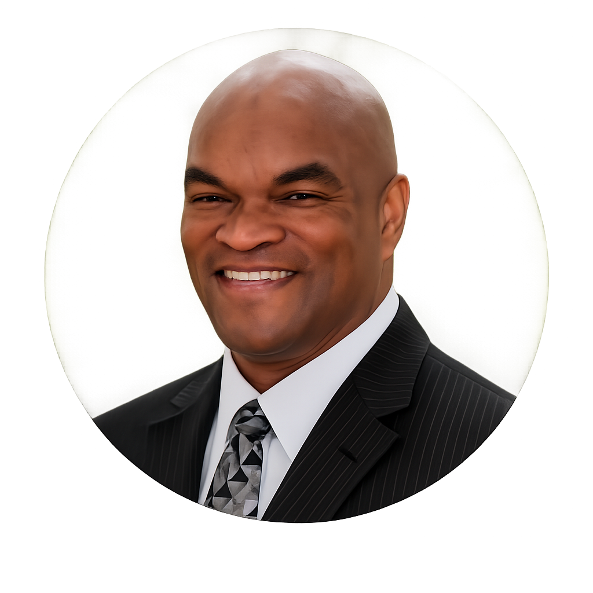
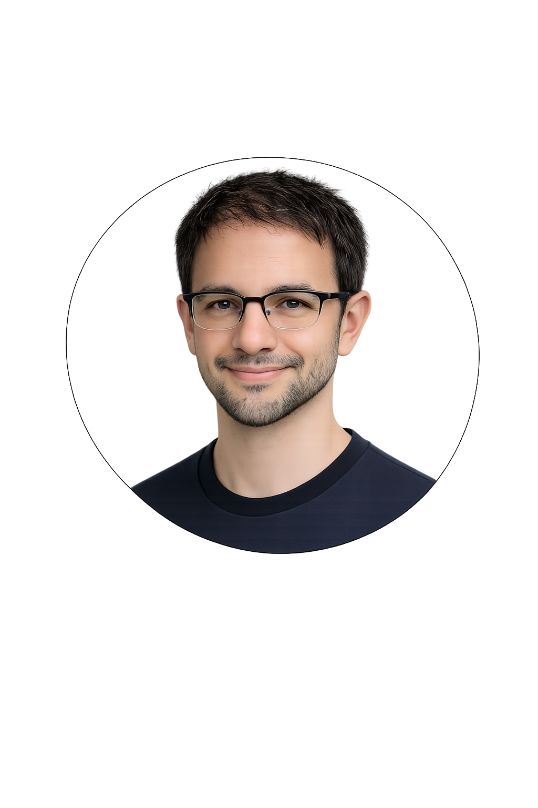
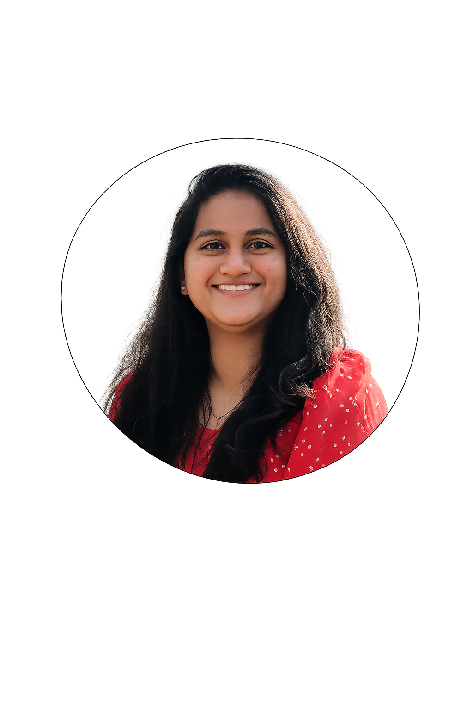
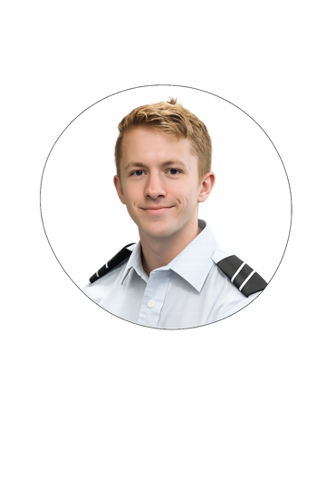

Providing research guidance, technical oversight, and strategic direction. Dr. Dozier mentors the development team, combining expertise in AI and academic community-building to shape the platform's execution.


Part of the student team building AI-generated keynote speaker systems for colleges and universities nationwide.

Contributing to the development of custom AI avatars and full-production keynote talks tailored to institutional voices.

Passionate about Artificial Intelligence and Agentic AI, working to shape the future of knowledge communication.